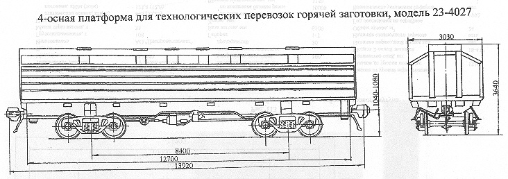

Назначение: для технологических перевозок горячей заготовки
Параметры
| Номер проекта | 4027.00.000-03 |
| Технические условия | |
| Модель вагона | 23-4027 |
| Тип вагона | |
| Изготовитель | АО "Днепровагонмаш" |
| Грузоподъемность, т | 100 |
| Масса тары вагона, т | 45 |
| Нагрузка: статическая осевая, кН(тс) |
343(35) |
| погонная, кН/м(тс/м) | 102,1(10,42) |
| Скорость движения, км/ч: по магистральным путям в порожнем состоянии |
100 |
| по путям промышленных предприятий | 35 |
| Габарит | 1-Т |
| База вагона, мм | 8400 |
| Длина, мм: по осям сцепления автосцепок |
13920 |
| по концевым балкам рамы | 12700 |
| Ширина максимальная, мм | 3030 |
| Высота от уровня верха головок рельсов, мм максимальная с колпаком |
3640 |
| до плоскости пола | |
| Количество осей, шт. | 4 |
| Модель 2-осной тележки | 18-477 |
| Наличие переходной площадки | нет |
| Длина перевозимых заготовок, мм | 1250-2350 |
| Размеры сечений заготовок, мм: круглого |
Ø430 |
| Размеры сечений заготовок, мм: прямоугольного |
250-600 |
| Год постановки на серийное производство | 1989 |
| Возможность установки буфера | нет |